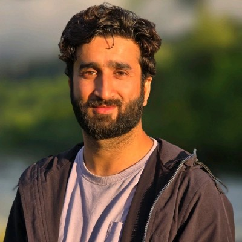

Assistant Professor of Economics
Department of Social Sciences & Languages · VIT Vellore
My research focuses on International Macroeconomics, Shock Transmission, and Safer Investments. The work has implications for countries' policymaking, fund allocation across asset categories, and risk management.

Dr. Adil Ahmad Shah
Assistant Professor
VIT Vellore
Introduction
I currently work as an Assistant Professor of Economics at VIT Vellore, where I have been a faculty member since May 2024. I received my Ph.D. in Economics from Shri Mata Vaishno Devi University in December 2022, under the supervision of Dr. Arif Billah Dar.
My research lies at the intersection of International Macroeconomics and Risk Management. I am particularly interested in shock transmission in financial assets, fund allocation, and risk management — specifically portfolio diversification. My work combines an understanding of emerging themes in finance and broader asset categories with rigorous empirical methods to evaluate risk transmission and management strategies.
Before joining VIT Vellore, I worked on various gold policy reports at the India Gold Policy Centre (IGPC) at IIM Ahmedabad. Under the mentorship of Dr. Niyati Bhanja, I also supported teaching the Microeconomics course at MICA Ahmedabad. I have presented my work at international conferences, including IIMA's flagship Annual Gold and Gold Markets Conferences of IGPC.
With a deep interest in Horticulture and a one-year diploma in Basic Horticulture from SKUAST-K, I along with my family run a profitable High-Density Apple Nursery in Kashmir, creating seasonal employment for local workers.
Research Interests
Scholarship
The study explores the risk management potential of historical (gold and crude oil) and modern (bitcoin) assets against shocks in clean energy stocks. Using generalised VAR-based connectedness measures and a DCC-GARCH model on daily data from October 2014 to April 2023, we find that downside shock transmission (bad spillovers) outperforms upside transmission. Gold is shown to be a preferable diversifier of cleaner equity risk on average, during distress events, in downside markets, and across all investment horizons.
View Paper →Explores global sectoral connectedness and the risk management potential of gold and the US dollar using variance decomposition-based spillover measures. Findings reveal that industrial and financial sectors are systematically important for transmitting global sectoral shocks, and that connectedness dominates in downside markets and during crisis events including the European Debt Crisis, Brexit, US–China trade war, and COVID-19.
View Paper →Examines the nonlinear relationship between oil returns/shocks and cryptocurrencies from March 2018 to October 2021 using the cross-quantilogram methodology. Finds that positive correlation between oil and crypto returns in normal and bullish markets turns negative across all market conditions, with oil demand shock fluctuations driving significant cryptocurrency movements in bearish markets.
Pedagogy
Undergraduate · Core
VIT Vellore
Introduction to microeconomic theory covering consumer behaviour, firm theory, market structures, and welfare analysis.
Undergraduate · Core
VIT Vellore
National income accounting, aggregate demand and supply, fiscal and monetary policy in a closed economy.
Undergraduate · Elective
VIT Vellore
Trade theory, international financial markets, exchange rate determination, and global macroeconomic policy coordination.
Undergraduate · Elective
VIT Vellore
Monetary theory, banking systems, financial instruments, and the role of central banks in economic stabilisation.
Graduate · Support
MICA Ahmedabad · under Dr. Niyati Bhanja
Supported graduate-level Microeconomics instruction, content development, and evaluation.
Curriculum Vitae
Get in Touch
I welcome enquiries from students, fellow researchers, and collaborators. Feel free to reach out regarding research collaborations, seminar invitations, or any questions about my work.